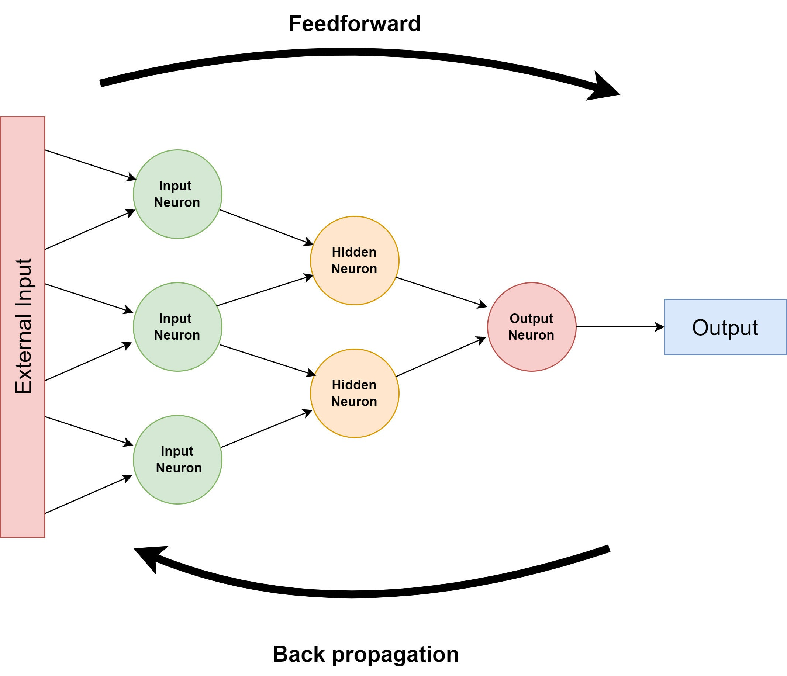
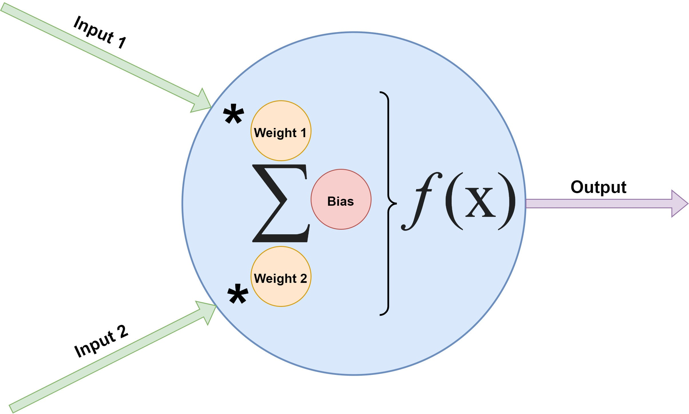
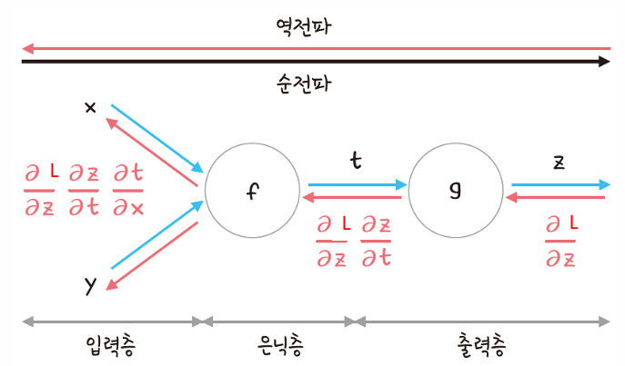

입력층 → 은닉층 → 출력층 → 오차 발생 → 출력층 → 은닉층 → 입력층
 각 노드는 들어오는 모든 입력값에 가중치를 곱해서 더한 후 편향을 더한다.
그리고 활성화 함수(시그모이드 함수, 렐루 함수 등)를 거쳐 다음 노드로 값을 보낸다.
이렇게 은닉층을 거쳐 출력층에서 출력된 값을 정답 값과 비교하여 오차를 계산한다.
계산된 오차는 역전파 알고리즘을 통해 새로운 가중치와 편향을 업데이트한다.
이때 미분이 활용된다.
미분이 사용되는 이유는 가중치와 편향이 손실 함수에 대한 기울기에 따라 어떻게 변화하는지를 계산하기 위해서이다.

역전파는 계산 결과와 정답의 오차를 구해서 이 오차에 관여하는 노드 값들의 가중치와 편향을 수정함
횟수, 정확성, 시간은 비례함 예) 회수가 증가하면 정확성과 걸리는 시간이 증가함
이 횟수의 주기를 1에포크(epoch)라고 함
에포크를 늘리면서 가중치와 편향을 업데이트하여 점점 오차를 줄여 나감
